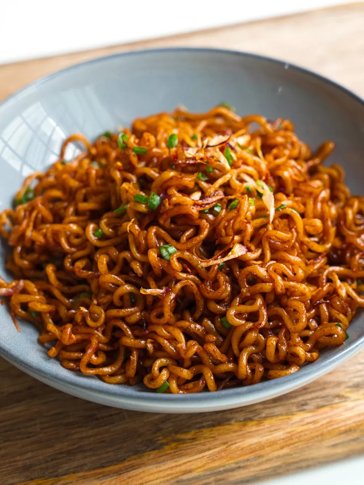

Indomie Recipe
Homepage

Description
This recipe will walk you through how to make indomie mi goreng noodles like a champ!
Ingredients
- one packet of indomie mi goreng noodles
- one egg
Steps
- Boil water in a pot (enough to boil an egg)
- Add egg to pot and boil till desired cook time
- pour away some of the water. (you don't need a lot for indomie. unless opting for noodle soup)
- Open indomie mi goreng satchet and add the dry noodles to pot
- Cook till noodles have separted
- Open and add the contents of the seasoning packet and oil
- Take out egg and place in bowl of cold water
- Once noodles are cooked through, take noodles out and plate
- Peel the egg and plate with your now ready dish!